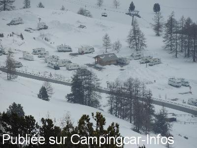
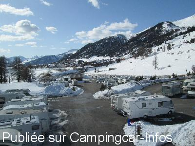
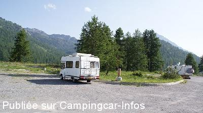
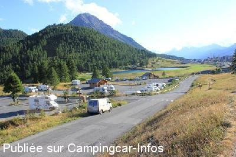
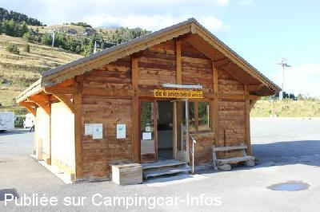
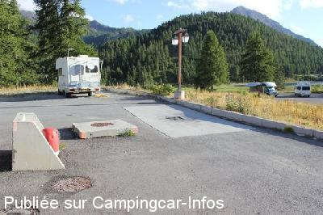

ASN = Aire de services avec stationnement nuit possible de :
MONTGENÈVRE
(N° 313)
Accès/adresse :
Accès N94
Aire du Collet
05100 MONTGENÈVRE
Aire du Collet
05100 MONTGENÈVRE
Latitude : (Nord) 44.93419° Décimaux ou 44° 56′ 3′′
Longitude : (Est) 6.73421° Décimaux ou 6° 44′ 3′′
Tarif : 2016
Stationnement, électricité, services : 10 €
Services C-C de passage 2 h : 5 €
Automate de paiement
Type de borne : Plateforme
Services :


Navette
Autres informations :
Ouvert toute l'année
250 emplacements goudronnés, éclairés
80 points d’alimentation électrique
Tel : + 33 (0)492 215 252
http://montgenevre.com/hebergement/camping-caravaning/98-aire-de-camping-car-du-collet

Le 31/03/2016 par claude77169

Le 28/03/2016 par eric76

Le 12/08/2014 par codejuma

Le 14/08/2012 par iron

Le 14/08/2012 par iron

Le 14/08/2012 par iron
de
eric76
le 28/03/2016 :
grande aire, services pratiques, le weekend un raz de marée d'italiens, aux pieds des pistes, domaine moyen
commerçants à 1 km
grande aire, services pratiques, le weekend un raz de marée d'italiens, aux pieds des pistes, domaine moyen
commerçants à 1 km
de
marie et didier
le 15/02/2016 :
bonjour superbe sejour pour une premiere fois avons jamais vu une aire aussi grande!, petit bemol lors de notre arrivée, mon mari a fait les services au chalet
apres avoir choisi notre emplacement, une personne est venu frapper tres fort a la porte il semblais tres enerver : le motif mon mari avais oublier de refermer la vidange des eaux grises il devais couler un petit filet, je ne comprend pas cette personne qui en plus nous a presque insulter pas cool apres presque 600 km nous etions fatiguer, ce camping cariste est juste devant le chalet des services pourquoi tant de colere alors que juste une petite remarque sur notre oubli aurais suffit, par contre tres appreciable le personnel des navettes, nous reviendront quand meme
bonjour superbe sejour pour une premiere fois avons jamais vu une aire aussi grande!, petit bemol lors de notre arrivée, mon mari a fait les services au chalet
apres avoir choisi notre emplacement, une personne est venu frapper tres fort a la porte il semblais tres enerver : le motif mon mari avais oublier de refermer la vidange des eaux grises il devais couler un petit filet, je ne comprend pas cette personne qui en plus nous a presque insulter pas cool apres presque 600 km nous etions fatiguer, ce camping cariste est juste devant le chalet des services pourquoi tant de colere alors que juste une petite remarque sur notre oubli aurais suffit, par contre tres appreciable le personnel des navettes, nous reviendront quand meme
de
gilles .et Martine
le 29/01/2016 :
§ aire de services en très bonne position soleil toute la journée prix correct 10€/jour avec le courant
passé en janvier 2016 aire bien remplis mais encore de la place a 800 des commerces .
Italie a 30 m donc ravitaillement possible au premier village.
bravo et a bientot pour une prochaine fois assurée
gilles
§ aire de services en très bonne position soleil toute la journée prix correct 10€/jour avec le courant
passé en janvier 2016 aire bien remplis mais encore de la place a 800 des commerces .
Italie a 30 m donc ravitaillement possible au premier village.
bravo et a bientot pour une prochaine fois assurée
gilles
de
balibalo
le 26/01/2015 :
re encore une fois et le tarif tjr inchangé soit pour 7 jours 58 euro, soit par jour 8 euro 29 qui dit mieux
aire vraiment au top, les moins ambiance un peu gacher le we arrivée d italiens un tantinet envahissant et bruyant! mais aire de grande capacité, avec edf 16 ampères alors n oublier pas votre radiateur electrique!!! l année prochaine nous y reviendront et cela fera 10 ans
re encore une fois et le tarif tjr inchangé soit pour 7 jours 58 euro, soit par jour 8 euro 29 qui dit mieux
aire vraiment au top, les moins ambiance un peu gacher le we arrivée d italiens un tantinet envahissant et bruyant! mais aire de grande capacité, avec edf 16 ampères alors n oublier pas votre radiateur electrique!!! l année prochaine nous y reviendront et cela fera 10 ans
de
codejuma
le 12/08/2014 :
tres belle aire de passage en juillet 2014 une nuit tranquille toujours 10 euro la nuit
tres belle aire de passage en juillet 2014 une nuit tranquille toujours 10 euro la nuit
de
les 4 m
le 20/04/2014 :
Alors de passage le 11.05.2014 au 19.05.2014 pas grand monde pour cette période tres belle station de ski face au pistes le service sont compris mais attention de ne pas dépasser le temps prévu de 7 jour pour 58€ si vous dépasser ca passe a 90€ je recommande cette station avec tous commerces et navette gratuite
Alors de passage le 11.05.2014 au 19.05.2014 pas grand monde pour cette période tres belle station de ski face au pistes le service sont compris mais attention de ne pas dépasser le temps prévu de 7 jour pour 58€ si vous dépasser ca passe a 90€ je recommande cette station avec tous commerces et navette gratuite
de
Marie-Christine & Philippe
le 19/08/2013 :
De passage le 16 août 2013 : Aire très calme, remarquablement bien située par rapport au golf, à la station de ski, aux commerces ... Dommage qu'il faille absolument des cales ... mais bon : un petit inconvénient par rapport à tant d'avantages ! Merci à l'Equipe Municipale.
De passage le 16 août 2013 : Aire très calme, remarquablement bien située par rapport au golf, à la station de ski, aux commerces ... Dommage qu'il faille absolument des cales ... mais bon : un petit inconvénient par rapport à tant d'avantages ! Merci à l'Equipe Municipale.
de
FRANBER
le 08/07/2012 :
De Franber le 02/07/2012
Aire super sympa nous y avons passé deux nuits réparatrices a 10° apres un mois de canicule en Sicile.Très belles rando à faire pour les marcheurs.
De Franber le 02/07/2012
Aire super sympa nous y avons passé deux nuits réparatrices a 10° apres un mois de canicule en Sicile.Très belles rando à faire pour les marcheurs.
de
balibalo
le 30/01/2012 :
encore de passage une semaine et tjr ravi, cela reviens à 8,40€ par jour, cette annee service de navette renforce au top a noter pour les debutants ou tout petit budget deux tapis gratuit et un teleski gratuit!(teleski durance) à l'entree de la station
encore de passage une semaine et tjr ravi, cela reviens à 8,40€ par jour, cette annee service de navette renforce au top a noter pour les debutants ou tout petit budget deux tapis gratuit et un teleski gratuit!(teleski durance) à l'entree de la station